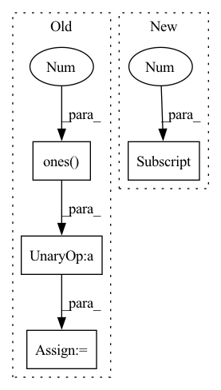

Pattern ID :4581

Before Change
lengths = all_lengths + torch.rand((ray_num, point_num)).to(target_device) * resolution
// sampled coords is (col_id, col_id)
if output_samples:
ray_raw = torch.sum(torch.cat([sampled_coords / focal, -torch.ones(sampled_coords.shape[0], 1, dtype = torch.float32).to(target_device)], dim = -1).unsqueeze(-2) * cam_tf[:, :-1], dim = -1)
pts = cam_tf[:, -1] + ray_raw[:, None, :] * lengths[:, :, None]
return torch.cat((pts, ray_raw.unsqueeze(-2).repeat(1, point_num, 1)), dim = -1), lengths, output_rgb, torch.cat((cam_tf[:, -1].unsqueeze(0).repeat(ray_raw.shape[0], 1), ray_raw), dim = -1)
ray_raw = torch.sum(torch.cat([(sampled_coords) / focal, -torch.ones(sampled_coords.shape[0], 1, dtype = torch.float32).to(target_device)], dim = -1).unsqueeze(-2) * cam_tf[:, :-1], dim = -1)
After Change
sampled_coords = coords[indices].to(torch.float32) + 0.5 // shift half pixel
if isinstance(focal, Iterable):
sampled_coords[..., 0] /= focal[1]
sampled_coords[..., 1] /= focal[0]
else:
sampled_coords /= focal
// sampled coords is (col_id, col_id)
ray_raw = torch.sum(torch.cat([sampled_coords, -torch.ones(sampled_coords.shape[0], 1, dtype = torch.float32).to(target_device)], dim = -1).unsqueeze(-2) * cam_tf[:, :-1], dim = -1)
In pattern: SUPERPATTERN
Frequency: 3
Non-data size: 4
Instances
Fragment ID: 16541532
Project Name: enigmatisms/nerf
Commit Name: 6540170a567b47e4c9f65c604c10931ad96d9be5
Time: 2022-07-10
Author: 984041003@qq.com
File Name: py/utils.py
M Class Name: AnonimousClass
N Class Name: AnonimousClass
M Method Name: validSampler(9)
N Method Name: validSampler(11)
M Parent Class:
N Parent Class:
M File Name: py/utils.py
N File Name: py/utils.py
M Start Line: 69
M End Line: 85
N Start Line: 73
N End Line: 90
'>
Before Change
mask = Masks.get_ff_mask(height, width)
mask_all.append(mask)
mask = torch.from_numpy(np.asarray(mask_all)).unsqueeze(1).float()
ones = torch.ones(x.size(0), 1, x.size(2), x.size(3))
mask = ones * mask
if x.is_cuda:
mask = mask.cuda()
result = x * (1. - mask)
After Change
def mask_image(x, config):
height, width, _ = config["image_shape"]
max_mask = x.shape[0]
mask = random_mask(max_mask)
if x.is_cuda:
mask = mask.cuda()
'>
Fragment ID: 16541533
Project Name: sayednadim/global-and-local-attention-based-free-form-image-inpainting
Commit Name: aaa17ed332dc95db0f5900a43be179e26569b50c
Time: 2020-08-16
Author: smnadimuddin@gmail.com
File Name: model/mask.py
M Class Name: AnonimousClass
N Class Name: AnonimousClass
M Method Name: mask_image(2)
N Method Name: mask_image(2)
M Parent Class:
N Parent Class:
M File Name: model/mask.py
N File Name: model/mask.py
M Start Line: 40
M End Line: 49
N Start Line: 56
N End Line: 72
'>
Before Change
def mask_image(x, config):
height, width, _ = config["image_shape"]
mask = torch.ones(x.size(0), 1, x.size(2), x.size(3))
temp = torch.ones(x.size(0), 1, x.size(2), x.size(3))
for i in range(x.size(0)):
mask_temp = Masks.get_ff_mask(height, width)
mask_temp = torch.from_numpy(mask_temp)
mask[i,:,:,:] = temp[i,:,:,:] * mask_temp
if x.is_cuda:
mask = mask.cuda()
result = x * (1. - mask)
After Change
def mask_image(x, config):
height, width, _ = config["image_shape"]
max_mask = x.shape[0]
mask = random_mask(max_mask)
if x.is_cuda:
mask = mask.cuda()
'>
Fragment ID: 16541537
Project Name: sayednadim/global-and-local-attention-based-free-form-image-inpainting
Commit Name: 2e453ae0b658395a88acb8db67115db86d9274ea
Time: 2020-08-16
Author: smnadimuddin@gmail.com
File Name: model/mask.py
M Class Name: AnonimousClass
N Class Name: AnonimousClass
M Method Name: mask_image(2)
N Method Name: mask_image(2)
M Parent Class:
N Parent Class:
M File Name: model/mask.py
N File Name: model/mask.py
M Start Line: 40
M End Line: 48
N Start Line: 56
N End Line: 72